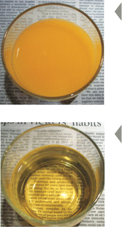

What Is a "Clear Liquid"?
As you get ready for your colonoscopy, you must drink only clear liquids. A liquid is considered "clear" if you can read something through it. Use this simple test to figure out what you can drink, and what you cannot drink.
This is orange juice
Orange juice is not clear because you can't read the newspaper through it.
Don't drink this.
This is apple juice.
Apple juice is clear because you can read a newspaper pring through it.
You can drink this.
14/20